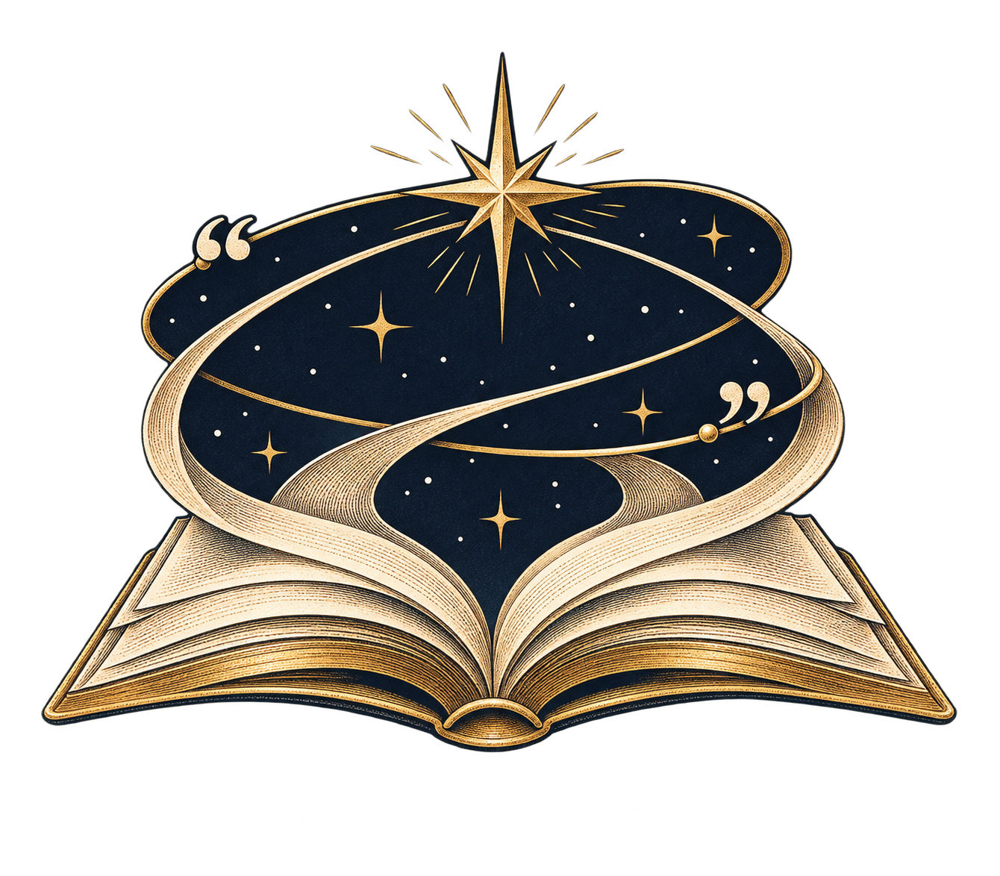

Направление 01Книга · орбита · звезда

Слово выходит на орбиту
Открытая книга превращается в звёздную орбиту; кавычки задают тему чтения и перевода.
Нарративный знак · книжная гравюраАйдентика · три направления
Космос, перевод и литература — три варианта знака проекта, созданные по мотивам ваших референсов.
Ни один из этих вариантов пока не выбран как финальный логотип. Выберите направление, и знак можно будет довести до чистой версии вместе с написанием Karolina vs. The World.